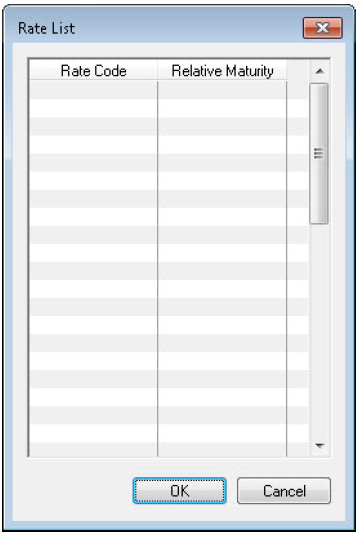

利率模型选择（Interest Rate Models）
Model选择是interest rate定义的核心，因而本节对Model选项中可选择的利率模型进行介绍。这里只介绍每个模型的特定参数，其他一些共有的必需参数在本节的示例中按如下定义：
——利率的固定日期按PARIS - EUR日历确定
——利率在息票开始日期的两天前固定，由Settlement Lag确定
——利率金额四舍五入到小数点后四位
——利率的工作日按PARIS日历确定
标准模型(Standard)
标准利率模型是用来定义标准利率的。该利率可用于任何以利率为标的资产的金融工具。
标准利率模型的特定参数包括：
——Term：利率的期限，可以定义为任何长度的时间。
——Curve Family : 定义用于对利率定价的曲线系。
——Model：利率模型必须设置为Standard。
——Rate Type：定义利率的类型，用于短期利率时，设置为Monetary；用于长期利率时，设置为Swap。
以下为一个标准利率设置样例。如图所示，这是一个利率期限为三个月的短期利率。

基差互换利率（Basis Swap Rate）
基差互换利率模型用于定义基差互换利率。基础互换利率是用来建立基差互换曲线的长期利率模板。
基差互换曲线用于为下列息票定价：
——两种不同货币利率之间的基差互换
——同种货币不同区间(tenor)的两种利率的互换
——同种货币不同利差(spread)的两种利率的互换
基差互换利率用于以下情形的定义：
——基差互换曲线的长期期限
——基差互换得曲线系中的默认利率
以下为一个基差互换利率设置样例。如图所示，这是一个利率期限为一年的基差互换利率；利率类型为Swap，这将利率定义为一个长期利率；EUR_long作为基差和利率互换的标的资产。

基差互换利率模型的特定参数包括：
——Term：利率的期限，必须定义为一年或以上。
——Curve Family : 定义基差曲线的曲线系。
——Model：利率模型必须设置为Basis Swap Rate。
——Rate Type：定义利率的类型，必须设置为Swap。
——Index：定义作为基差或利率互换的标的资产的利率
固定期限互换利差利率（CMS Spread Rate）
固定期限互换利率（Constant Maturity Swap Rate）
固定期限互换(CMS)是被设置为按利率互换定价的利率。这使用户可以按照进入一个利率互换的合同利率创建期货。
CMS的浮动端定义为一个标的利率，固定端取自利率曲线的一个点。利率曲线的点由CMS的期限决定。例如，如果CMS利率的期限设置为一年，利率曲线上到期日为一年的利率将用作互换的固定利率。
以下为一个CMS利率设置样例。如图所示，这个IMM CMS利率的利率期限为一年，与EUR_S的期限相同；利率类型为Swap，这将利率定义为一个长期利率；Index下拉列表选择的EUR_short利率为CMS利率的浮动端。

固定期限互换利率的特定参数包括：
——Term：利率的期限，必须定义为一年或以上。注：此项必须设置为标的利率的期限
——Model：利率模型必须设置为Standard。
——Rate Type：定义利率的类型，必须设置为Swap。
——Index：定义用于互换的浮动利率，必须是一个Rate Type为monetary的短期利率。
——Frequency：定义互换的频率。注：此项必须设置为标的利率的频率
——Settlement Lag：定义互换的开始日期。互换开始日期由Term加Settlement Lag确定利率曲线上的点。
CMS利差利率(CMS Spread Rate)
固定期限互换（CMS）利差利率曲线是其长期利率定义为基于另一个利率的利差的曲线。长期利率使用CMS Spread Rate模型定义。
以下为一个CMS利差利率设置样例。这是一个用于CMS利率曲线的长期利率，其特征包括：利率期限为一年；利率类型为Swap，这将利率定义为一个长期利率；Index下拉列表选择的EUR_short利率为CMS利差曲线的短期利率。

CMS利差利率的特定参数包括：
——Term：利率的期限，必须定义为一年或以上。
——Model：利率模型必须设置为CMS Spread Rate。
——Rate Type：定义利率的类型，必须设置为Swap。
——Index：定义用于短期利率的利率。
国际货币市场CMS利率(IMM CMS Rate)
IMM CMS利率是为国际货币市场(IMM)日期定义的固定期限互换(CMS)利率。IMM日期是3月，6月，9月和12月的第三个星期三。这些日期用于计算互换现金流。
以下为一个IMM CMS利率设置样例。如图所示，这个IMM CMS利率的利率期限为两年；Index下拉列表选择的CMS Swap rate利率是国际货币市场的基准利率，也是CMS的浮动端；支付频率为quarterly，这与基准利率的期限相同；利率类型为Swap，这将利率定义为一个长期利率；利率模型为IMM CMS。

下图展示了为上例IMMCMSSwapRate定义的基准利率样例。该利率为一个期限为三个月的短期利率，该期限等于IMMCMSSwapRate的支付频率(frequency)。

IMM CMS利率的特定参数包括：
——Term：利率的期限，必须定义为一年或以上。
——Model：利率模型必须设置为IMM CMS。
——Rate Type：定义利率的类型。必须设置为Swap。
——Index：定义用于互换的浮动利率，必须是一个Rate Type为monetary的短期利率。利率的期限必须是三个月或六个月，因为IMM现金流是每季度产生的。
——Frequency：定义互换的频率，必须设置为quarterly或semi-annually，要与利率Index的期限匹配。注：美国市场下定义的IMM CMS利率Frequency必须为quarterly；欧洲市场下定义的IMM CMS利率Frequency必须为semi-annual。
——Settlement Lag：定义互换的开始日期。互换开始日期由Term加Settlement Lag确定利率曲线上的点。
浮动/通货膨胀互换利率(Floating/Inflation Swap Rate)
浮动/通货膨胀互换利率模型定义了用于校准通货膨胀互换中使用的通货膨胀率的利率。该模型是使用浮动vs通货膨胀互换的利率和通货膨胀率定义的。
浮动vs通货膨胀互换利率的特定参数包括：
——Model：利率模型必须设置为Floating/Inflation Swap Rate。
——Rate Type：定义利率的类型，自动设置为Inflation ZC Rate。
——Index：定义浮动vs通货膨胀互换的浮动利率。
——Inflation index：定义浮动vs通货膨胀互换的通货膨胀率。
——Inflation rule：定义通货膨胀率使用的通货膨胀规则。
以下为一个浮动vs通货膨胀互换利率设置样例。如图所示，这是一个期限为一年的浮动vs通货膨胀互换利率；利率日历规则为Open/252；复利计算模式为Actuarial；支付频率设置为final。

外汇基点利率(Forex Point Rate)
Forex Point Rate模型定义用于外汇曲线的利率。外汇曲线使用本币收益率曲线定义外币的零息利率。外汇远期工具使用这些利率来计算远期价格。
外汇基点利率的特定参数包括：
——Model：利率模型必须设置为Forex Point Rate。
——Rate Type：定义利率的类型，必须设置为Monetary。
以下为一个Forex Point Rate设置样例。如图所示，这是一个期限为一个月的外汇基点利率；利率类型为Monetary，这将利率定义为一个短期利率。

指数挂钩利率(Index-Linked Rate)
Index-Linked模型定义了智利利率互换使用的利率。该利率由每天发布的指数决定，可以使用实时反馈进行更新。
指数挂钩利率的特定参数包括：
——Model：利率模型必须设置为Index-Linked。
——Rate Type：定义利率的类型，自动设置为Monetary，且该设置不可更改。
以下为一个指数挂钩利率设置样例。如图所示，这是一个期限为一个月的指数挂钩利率；利率类型为Monetary，此项是Model下拉项选择Index-Linked的情况下自动设置的；settlement lag设置为两天。

插值利率模型(Interpolated Rate Model)
Interpolated Rate模型将利率定义为插值利率。插值利率是在一系列其他利率的到期日列表中插值获得的利率。如果息票期在此列表中的到期日之间，则利率将通过到期日在息票前的利率和期日在息票后的利率插值获得。插值中使用的利率根据到期日与票息期的接近程度为权重进行加权。
利率的插值方法如下：
不完整区间：利率使用息票开始日期前后的到期日定义的加权利率进行线性插值。例如，如果到期日列表定义了到期日为三个月和九个月的利率，而不完整区间为六个月零一周，则利率将从三个月和九个月的利率中插值。九个月利率的权重比三个月利率的权重更高，因为不完整区间更接近九个月。
完整区间：到期日列表中最接近的到期日的利率用作完整区间的利率。
插值利率可用于一下金融工具：
带浮动端的利率互换(Swaps with floating legs) 浮动利率债券(Floating bonds) 利率顶和底(Caps-and-floors) 债务工具(Debt instruments)
插值利率的特定参数包括：
——Model：利率模型必须设置为Interpolated Rate。这将启用Open model specific data按钮。单击此按钮将显示Rate List对话框，该对话框定义插值利率的到期日。
——Rate Type：定义利率的类型，必须设置为Swap。
以下为一个插值利率设置样例。如图所示，这是一个期限为一年的插值利率；利率类型为Swap，这将利率定义为一个长期利率。

定义到期日列表
按以下步骤要定义插值利率的到期日列表：
1.点击利率窗口的Openmodel specific data按钮，弹出Ratelist窗口。
2.在Rate Code列中，输入按用户所需到期日定义的利率参考代码。所选利率的期限显示在Relative Maturity列中。注：不能在Ratelist中指定内插利率。
3.点击OK按钮
插值利率样例：
不完整的现金流显示在金融工具窗口的端选项卡中。 下图为“利率互换”窗口的“支付端现金流”选项卡：

第一期现金流是不完整区间，在这个现金流的Broken Flow列显示Yes。此现金流的插值利率显示在Full Explanation选项卡上。此选项卡显示不完整区间的详细信息：
——Days：不完整区间包含的天数
——Rate：插值利率
——Fixing Weight 1：到期日在不完整区间之前的利率的权重，用于插值利率。此列和Fixing Weight 2列的加和为 100。如果修改此权重，则Fixing Weight 2的权重将随之修改。
——Fixing Weight 2：到期日在不完整区间之后的利率的权重，用于插值利率。此列和Fixing Weight 1列的加和为 100。如果修改此权重，则Fixing Weight 1的权重将随之修改。
**注：**用户可以编辑除债务工具外所有使用插值利率的金融工具的fixing rates。此外，权重仅用于与带浮动端的利率互换和浮动利率债券。
反向浮动利率模型(Inverse Floater)
反向浮动利率模型用于定义了反向浮动利率。反向浮动利率是指与收益率曲线上的的短期基准利率反向变动的利率。如果基准利率上升，反向浮动利率就会下降。如果基准利率下降，反向浮动利率上升。这个模型可以用于任何以利率为标的资产的金融工具。
反向浮动利率是用一个固定金额与利率的差值来确定的。这个金额以百分比为单位定义作为利差(spread)金额。反向浮动利率计算为利差金额减去基准利率乘杠杆比率。例如，如果利差金额为7%，基准利率为5%，杠杆比率为50%，则反向浮动利率计算为4.5%。
以下为一个反向浮动利率设置样例。如图所示，这是一个期限为三个月的反向浮动利率；利率类型为Monetary，这将利率定义为一个短期利率；利差金额为6%，杠杆比率为50%。

反向浮动利率的特定参数包括：
——Spread(%)：定义利差金额。反向浮动利率的计算方法是用这个金额减去基准利率。必须以百分比为单位定义。
——Curve Family：定义基准利率的收益率曲线的曲线系。
——Leverage：定义用于计算反向浮动利率的基准利率的百分比。例如，基准利率为4%，杠杆比率为50%，则用于计算的基准利率为2%。
伦敦银行间同业拆借利率(Libor)
Libor模型是用来定义伦敦银行间同业拆借利率的利率模型。可以使用这个模型来定义利率互换和其他利率（如CMS利差利率和反向浮动利率）中使用的基准利率。
该模型的参数与Standard模型类似，唯一的区别是，所有的利率固定都使用由GBP货币定义的日历。
Libor利率的特定参数包括：
——Model：利率模型必须设置为Libor。
——Rate Type：定义利率的类型，必须设置为Swap。
以下为一个Libor利率设置样例。如图所示，这是一个期限为一年的Libor利率；利率类型为Swap，这将利率定义为一个长期利率。

伦敦插值利率模型(London Interpolated Rate)
London Interpolated Rate模型与Interpolated Rate模型是类似的。它使用一系列定义好的到期日列表来获得不完整现金流的插值利率。London Interpolated Rate模型和Interpolated Rate模型之间的唯一区别是，London Interpolated Rate模型使用由GBP货币定义的日历。
以下为一个Libor Interpolated Rate设置样例。如图所示，这是一个期限为一年的伦敦插值利率；利率类型为Swap，这将利率定义为一个长期利率。

London Interpolated Rate利率的特定参数包括：
——Model：利率模型必须设置为Interpolated Rate。这将启用Open model specific data按钮。单击此按钮将显示Rate List对话框，该对话框定义插值利率的到期日。
——Rate Type：定义利率的类型，必须设置为Swap。
墨西哥互换利率(Mexican Swap Rate)
墨西哥利率互换的到期日定义为28天的倍数。Mexican Swap Rate模型被用来定义与这些到期日相对应的期限的利率。
Mexican Swap Rate利率的特定参数包括：
——Model：利率模型必须设置为Mexican Swap Rate。
——Rate Type：定义利率的类型，必须设置为Swap。
——Index：定义基准利率，必须设置为一个期限为28天的短期利率。
——Frequency：定义利率的支付频率，必须设置为4Weeks。
以下为一个Mexican Swap Rate设置样例。如图所示，这是一个期限为一年的墨西哥互换利率；利率类型为Swap，这将利率定义为一个长期利率。

隔夜指数掉期利差率（OIS Spread Rate）
OIS Spread Rate定义为隔夜利率与固定期限伦敦银行同业拆借利率之间的利差。其一端为交易日确定的伦敦银行同业拆借利率，另一端根据每日隔夜利率计算。这个利率是基于一个基准利率(index)定义的，例如Libor欧洲美元利率或联邦基金利率等。该模型中参数包含:
——Term：利率的期限，必须定义为一年或以上。
——Model：利率模型必须设置为OIS Spread Rate。
——Rate Type：定义利率的类型。必须设置为Swap。
——Index：定义用于互换的浮动利率。
互换利率模板(Template Swap Rate)
Template Swap Rate使得用户可以使用一个模型来定义标准互换(tandard swap)、基差互换(basis swap) 或其他类型的互换利率。该模型中参数包含:
——Curve Family : 必需的，由用户定义。指定用于对利率贴现的曲线系。
——Model：利率模型必须设置为Template Swap Rate。
——Swap Template：定义用作一般互换利率模板的互换利率。basis, frequency, compounding mode, spread, settlement lag, index, fixing place, calendar place和hort index等一系列参数通过模板获取。